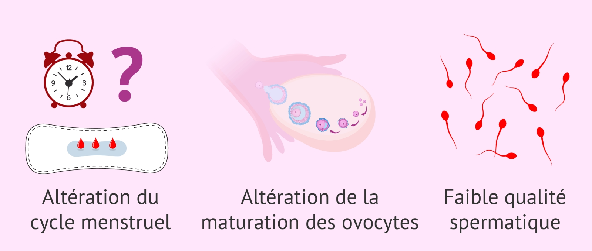

Impact général sur la fertilité
L'alcool consommé de façon modérée n'affecterait pas la fertilité chez la femme, mais au-delà de 14 verres par semaine, elle serait diminuée. C'est en tout cas ce que tend à montrer une étude danoise sur la question. C'est aussi dans ce sens que vont les statistiques suédoise: selon elles, les femmes ayant une consommation modérée consulte moins souvent un spécialiste de la fertilité que les femmes qui boivent le plus. Concernant les hommes, une étude également danoise indique que même une faible dose d'alcool dans le sang (1 verre par jour) peut affecter la quantité et la qualité de sperme. Mais pas d'inquiétude, après 3 mois d'abstinence les spermatozoïdes atteignent une quantité et une qualité normale. Les effets sont donc réversibles.
Consommer de l'alcool pendant la pèriode de conception
Pour une femme, une consommation hebdomadaire de 10 verres augmenterait le risque de fausse couche, il serait multiplié par 2 ou 3 par rapport au femmes qui ne boivent pas. Si c'est l'homme qui boit cette même quantité, le risque de fausse couche est 2 à 5 fois plus important que la moyenne. Puisque 2 à 3 mois sont nécessaires au développement d'un spermatozoïde, il est conseillé de boire le moins possible dans les 3 mois précédents la conception. Les recherches et les différentes études sont à appréhender avec précaution car plusieurs d'entre elles se contredisent étant donné la complexité du sujet. Quoi qu'il en soit, veillez à consommer l'alcool avec modération.